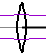
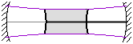

LaserCanvas 5 > Introduction >
Optics can only be selected and moved by their "vertex" at the centreline of the system. When the mouse is over an optic vertex, the mouse cursor changes to indicate that the optic can be selected and moved. The icons themselves cannot be selected.
| Incorrect | Correct |
You do not need to insert space elements between optics. The positioning of the remaining optics (mirrors, lenses, etc.) automatically defines the spaces between them.
To precisely define the separation between two optics, select the optic before the space you wish to define and enter the desired spacing in the Distance to Next item in the Property Manager.
To precisely determine the thickness of a refractive element, select the input face and enter the desired thickness in the Thickness item in the Property Manager.
| Displayed Separation |
If you are looking for accurate mode sizes, the wavelength of the system (and the M2 beam propagation factor) must be set correctly. By default, LaserCanvas assumes a wavelength of 1064 nm. The mode typically scales in proportion to the wavelength, so an incorrect wavelength leads to inaccurate mode sizes.
Mathematically, the radius of curvature of a flat mirror, or a flat wave front, is infinite. LaserCanvas uses ROC = 0 to denote flat mirrors and wave fronts.
Due to floating-point round-off, flat or nearly-flat wave fronts may sometimes be displayed as large curvatures, such as 1 x 1018 mm.
Similarly, focusing lenses have positive focal lengths.
|  | |
A concave dielectric interface, as seen from the refractive material, always has a positive radius of curvature, for both entrance and exit faces. Convex interfaces have negative ROC.
|  |
The ABCD formulae are not tied to any system of units and include no conversion factors. LaserCanvas uses a selection of metric convenience units to eliminate large pre-factors. All quantities are listed with their units. Lengths are in mm (
If you wish, you can use any other length units (meters, inches, etc.) provided all lengths are expressed in the same units.
The displayed laser mode appears discontinuous at system corners and is not flush with curved interfaces.
Remember that the mode is displayed on a larger scale than the optical system (typically 20x larger). The small offset of curved optics and the actual intersection points with angled optics are not intended to be displayed accurately.
The tangential plane is the plane formed by the incidence ray and the normal to the optic. Since LaserCanvas only models two-dimensional systems, this is equivalent to the plane of the drawing. Thus, the tangential plane is parallel to the table. The sagittal plane sticks out.
This limitation is currently imposed by the interface engine of LaserCanvas, not the ABCD calculations. The calculations for ring resonators are no more complex than for standing-wave resonators.